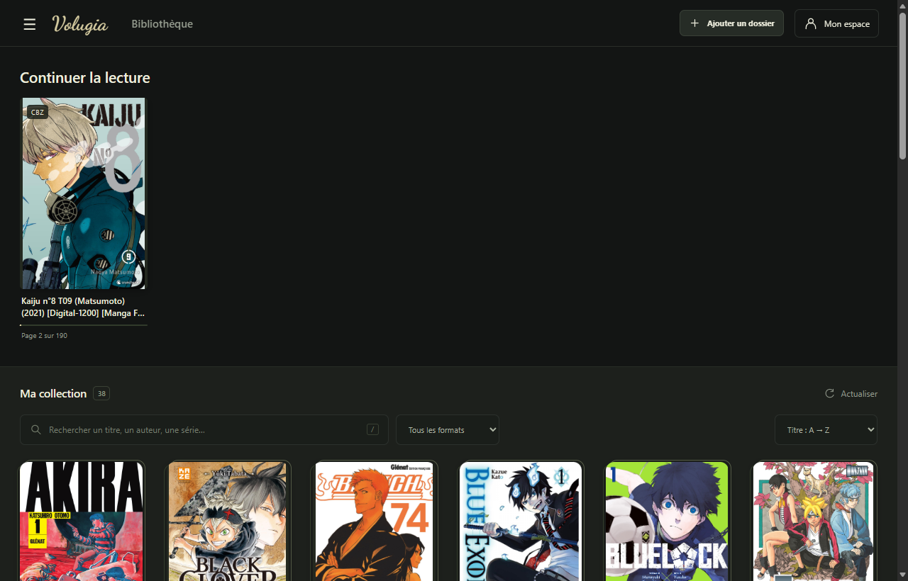
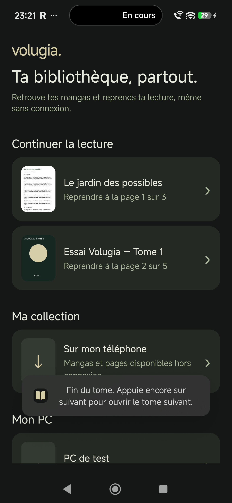
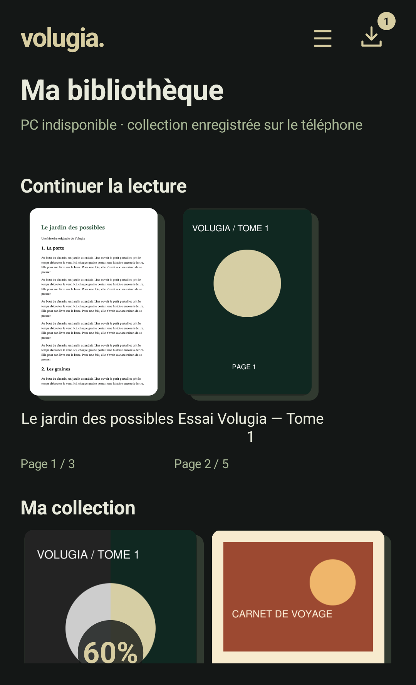
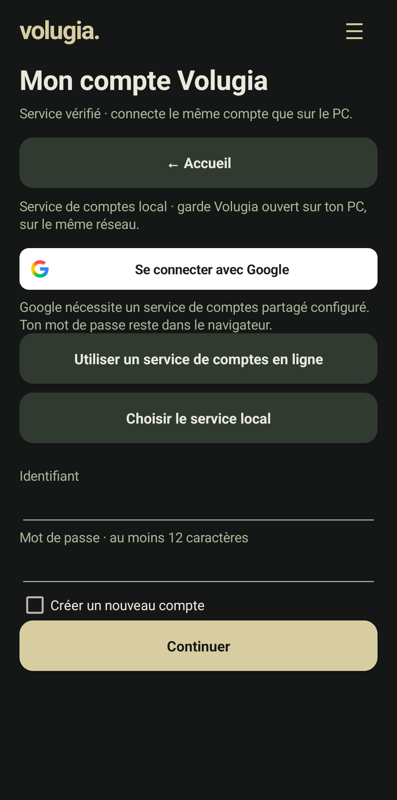

Votre bibliothèque, en toute liberté
Vos lectures. À votre rythme.
Mangas, BD, webtoons et livres. Une bibliothèque qui reste chez vous, du PC au téléphone.
Windows & Android Bientôt disponible


- Vos fichiers restent chez vous
- Sans abonnement
- Lisez aussi hors ligne
Le plaisir de lire, simplement
Tous vos tomes.
Un seul endroit.
Une collection à vous. Une lecture qui vous ressemble.
Une collection bien rangée
Ajoutez vos dossiers. Retrouvez vos mangas, BD et livres par séries, sans déplacer ni renommer vos fichiers.
Reprenez là où vous en étiez
Gardez votre progression et vos favoris sur PC et Android. Votre prochain chapitre vous attend.
Emportez vos lectures
Téléchargez vos tomes sur Android avant de partir. Lisez dans le train, en voyage ou simplement sans connexion.
De votre bibliothèque à votre prochaine lecture
Le confort, sur chaque écran.
Votre collection.
Bien à sa place.
Retrouvez vos séries, choisissez un tome et plongez dans votre lecture. Vos dossiers restent exactement comme vous les avez rangés.
- Classement par séries et couvertures automatiques.
- Recherche, favoris et reprise de lecture.
- CBZ, CBR, PDF, EPUB et archives 7z.

Un tome de plus.
Où que vous soyez.
Un lecteur natif pour retrouver votre bibliothèque sur le téléphone et emporter vos séries préférées hors ligne.
- Page simple, double planche et plein écran.
- Mode webtoon avec défilement vertical continu.
- Sens de lecture mémorisé pour chaque livre.
- Téléchargements avec suivi, pause et reprise.
Vos appareils.
Le même fil de lecture.
Reliez directement vos appareils sur le réseau local ou choisissez un compte partagé. Le compte reste facultatif.
- Association locale ou connexion Google.
- Progressions et favoris synchronisés.
- Import des lectures depuis YACReader, Calibre, Komga et Kavita.

Votre prochaine lecture commence ici.
Explorez les vrais écrans de Volugia, de la bibliothèque au lecteur.
Bibliothèque Windows
Reprise rapide avec "Continuer la lecture", vue en grille de séries, recherche instantanée et filtres par format.
Accueil Android
Accès direct aux lectures en cours, consultation des tomes synchronisés et navigation hors-ligne fluide.
Gestionnaire de Téléchargements
Suivi en direct des tomes en cours de transfert depuis le PC, gestion fine de la file d'attente, boutons de pause et annulation.
Double Planche Automatique & Lecteur Épuré
Détection intelligente des doubles planches pour une immersion totale sans coupure, sens de lecture mémorisé et affichage plein écran.
Compte Google & Synchronisation
Connexion rapide avec votre compte Google pour associer vos appareils et synchroniser votre progression de lecture.
Trois étapes. Et le plaisir de lire.
Vos dossiers, vos appareils, vos lectures. Prenez simplement vos marques.
Ajoutez vos dossiers
Lancez Volugia.exe sur votre PC. Cliquez sur Ajouter un dossier et sélectionnez
le répertoire contenant vos tomes. Vos sous-dossiers sont analysés automatiquement.
Connectez vos appareils
Associez votre PC et votre smartphone en toute simplicité : connectez votre compte Google ou reliez directement vos appareils sur votre réseau local.
Lisez partout, hors ligne
Lisez confortablement sur votre moniteur ou lancez le téléchargement de vos séries sur Android pour les savourer n'importe où, même sans réseau.
Vos formats. Vos fichiers. Votre choix.
Conçu pour s'adapter à vos fichiers existants sans nécessiter de conversion fastidieuse.
Formats de lecture supportés
-
CBZ (Archives ZIP) : Images ordonnées naturellement, prise en compte des métadonnées
ComicInfo.xml. - CBR (Archives RAR) : Lecture directe grâce à UnRAR sans extraction intégrale sur le disque.
- PDF : Rendu haute fidélité page par page avec couverture générée depuis la première page.
- EPUB : Rendu à pagination fixe et stable pour préserver l'exactitude de vos marque-pages.
-
Archives 7z : Détectées et lues nativement même sous l'extension
.cbz. - Webtoons : Lecture verticale continue, adaptée aux longues pages.
Sécurité & Architecture
- Architecture locale : Exécutable Windows autonome avec Microsoft WebView2 et SQLite local.
- Client Android natif : Code Java pur, sans WebView, optimisé pour l'autonomie et le rafraîchissement d'écran.
- Chiffrement des sessions : Windows DPAPI pour la session PC, Android Keystore pour le mobile.
- Transports chiffrés : Connexions sécurisées par certificat TLS local généré sur votre machine.
- Comptes partagés optionnels : Hachage Argon2id, aucun mot de passe conservé en clair.
Quelques questions, avant le premier tome.
Des réponses claires et transparentes sur le fonctionnement de l'application.
Faut-il créer un compte pour utiliser Volugia ?
Non. Vous pouvez utiliser Volugia sur votre PC et relier votre téléphone Android via votre réseau local sans jamais créer de compte ni renseigner d'adresse e-mail. L'option de compte partagé (local ou Google) est strictement facultative et sert uniquement à faciliter la gestion de plusieurs appareils.
L'application fonctionne-t-elle sans connexion Internet ?
Oui, à 100%. Sur le PC, Volugia n'a besoin d'aucun accès Web pour fonctionner. Sur Android, dès lors que vous avez téléchargé vos tomes ou vos séries via le Wi-Fi, vous pouvez lire en mode avion, dans le train ou en pleine nature sans aucune connexion.
Volugia modifie-t-il ou renomme-t-il mes fichiers originaux ?
Non. Volugia ne modifie, ne renomme et n'extrait jamais vos archives sur le disque.
Les métadonnées, séries et progressions sont enregistrées dans une base SQLite indépendante (data/library.sqlite).
Si vous retirez un dossier de Volugia, vos fichiers originaux restent intacts à leur emplacement.
Puis-je récupérer mes lectures depuis YACReader, Komga ou Calibre ?
Oui ! Volugia intègre un outil de migration intelligent. Il détecte automatiquement les bases SQLite de YACReader, Calibre, Komga ou Kavita, prévisualise les correspondances avec vos livres et importe votre progression (pages lues, favoris, statuts) en créant une sauvegarde préalable automatique.
Quels sont les prérequis pour utiliser Volugia sur Windows ?
Il suffit de posséder Windows 10 ou 11 (64 bits) avec Microsoft WebView2 (déjà préinstallé par défaut sur la quasi-totalité des PC Windows).
Vous n'avez pas besoin d'installer Python : Volugia.exe est un exécutable autonome qui intègre son propre environnement d'exécution.
Quelle version d'Android est requise ?
L'application Android est compatible avec Android 8.0 (Oreo) et toutes les versions ultérieures (jusqu'à Android 16). Elle est légère (moins de 200 Ko) et ne dépend d'aucun service tiers lourd.
Le prochain chapitre arrive bientôt.
Volugia se prépare pour Windows et Android. Vous retrouverez les téléchargements ici dès leur mise à disposition.
Volugia pour Windows
Application autonome et portable pour Windows 10 & 11 (64-bit). Aucun runtime Python requis, le moteur est directement intégré.
Volugia pour Android
Lecteur Java 100% natif ultra-rapide et économe en batterie. Compatible avec Android 8.0 et toutes les versions ultérieures.